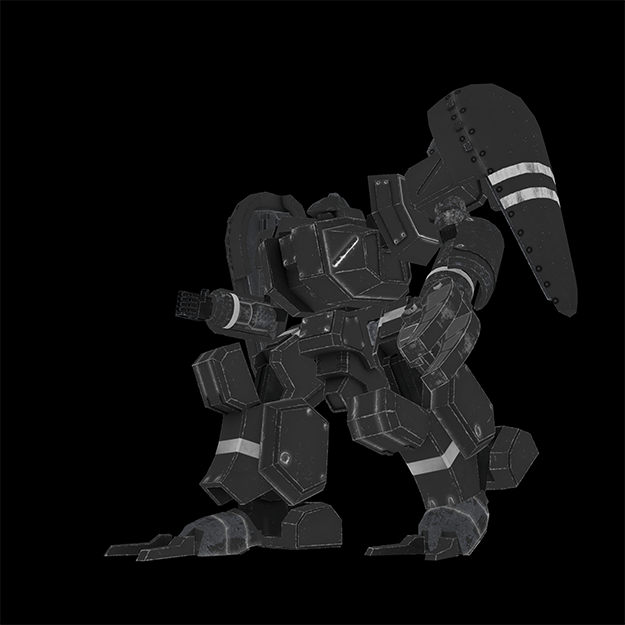
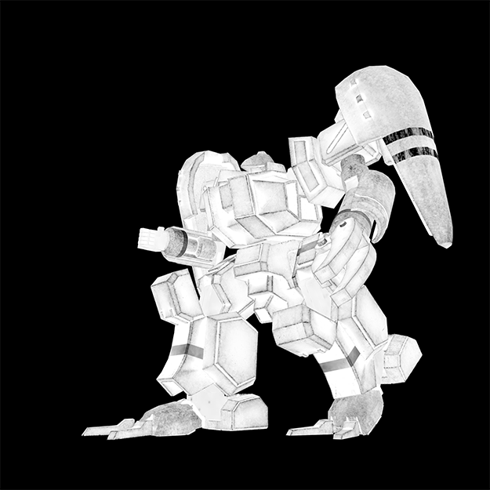
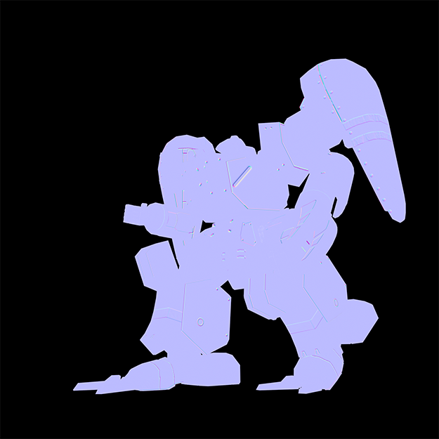
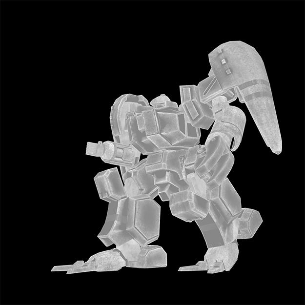
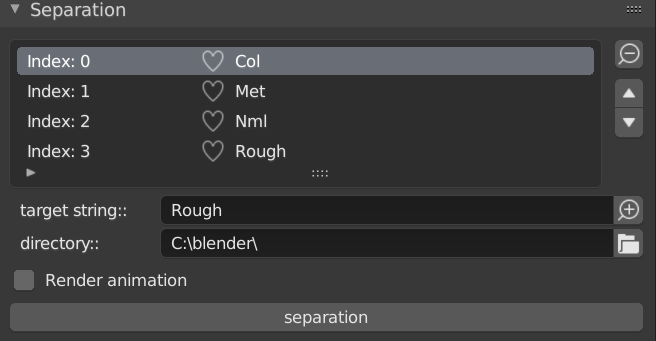
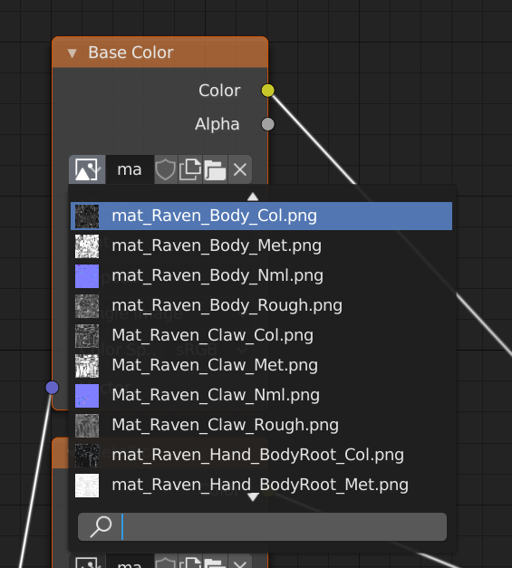

Blender scripts:Download&Install
Blenderの便利なアドオンスクリプトをダウンロードできます。
どのような機能が実装されているかは個別の説明を参照してください。
・Download
Blender_scripts.zip
・Getting a Git Repository
※何のことかわからない人は読み飛ばして問題ありません。
Git Repositoryを取得したい人は、Gitをセットアップしているならシェルで任意のディレクトリに移動し以下を実行します。
セットアップしていない場合はここでGitが入手できます。
$ git clone https://github.com/akim-muto/blender_scripts.git
Separation
ノードエディター上に配置され設定されたテクスチャのファイル名から固定文字を識別し、ベースカラー、メタリック、ラフネス、ノーマルなど種類別にレンダリングします。
※以下Separationの説明にはTrypticonでありカーバンクルさんより提供していただいたRavenのデータを用いて説明させてもらいます。

・マニュアル
1.Separationのメニュー
Separationのメニューはインストールが完了している場合、Renderパネルにあります。
2.固定文字の設定
Separationはレンダリングする際にテクスチャファイルのファイル名中の固定文字を識別し、利用します。
そのためテクスチャファイルにベースカラーやメタリックなどの種類ごとに、あらかじめ固有の固定文字を含めておく必要があります。
レンダリングする以前にSeparationに使用したい種類のテクスチャファイルの固定文字を指定します。target stringとラベルが張られたテキストボックスに指定したい固定文字を入力し、テキストボックス隣の＋のアイコンをクリックするとリストに固定文字が追加されます。レンダリングしたいすべての種類のテクスチャファイルの固定文字を追加する必要があります。


3.出力ディレクトリの指定
レンダリングした際の出力先を指定します。デフォルトでは"C:\blender\"となっています。
directoryトラベルの張られたテキストボックスの隣のアイコンをクリックするとファイルブラウザが開くので、指定したいディレクトリを開いてopen browserを押します。
なおファイル名があらかじめ入力されている場合がありますので、その際はファイル名を消去してディレクトリのみの状態にしてください。
4.レンダリング
アニメーションをレンダリングする場合はRender animationのラベルが張られたチェックボックスにチェックをいれます。
アニメーションかどうかの選択が終わったらseparationというコマンドボタンを押すとレンダリングが開始されます。
5.注意事項
コンポジットを設定している場合、正常にレンダリングされない場合があります。CompositorでUse Nodeのチェックを外すとうまくいく場合があります。
Pivot change
編集モードで選択した頂点を、オブジェクトモードへ変更した上でピボットポイントに変更します。
・マニュアル
編集モードに変更し、頂点選択モードで頂点を一つだけ選択します。キーボードでキー[d]を入力するとオブジェクトモードに変更し、選択していた頂点の位置にピボットポイントが来ます